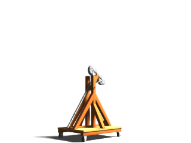

T-Shirt Hurling Contest Questions
I've received a fair number of questions about details of the
contest:
- How much time do we get to launch the shirts? About 5
minutes
- Are the shirts rolled or folded any special way? No.
They're just regular t-shirts. You can fold, roll or package them
any way you'd like. Just make sure they're non-lethal (no
embedding in cannonballs, for example).
- Is there a source of electricity? Absolutely. There's
an internet connection too.
- How many shirts do we need to launch? As many as you
can in the time available. But don't worry about volume: previous
entrants have won even though they only managed to launch a
couple of shirts.
- How far do the shirts have to be thrown? It's several
hundred feet to the back of the room, but don't worry about
trying to go that far. 50 or 60 feet would be OK (but more is
better!).
- How stable is the stage? Launching doesn't happen from
the stage: it's too fragile. Usually it happens from a specially
built platform (roughly 20'x20') that gets rolled out next to the
stage. It's pretty robust. Suitable for mounting cannons and
siege weapons.
Don't be bashful! Keep those entries coming! Make Newton
proud!